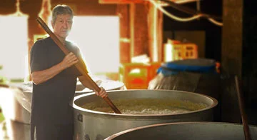
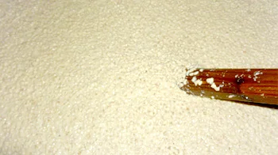
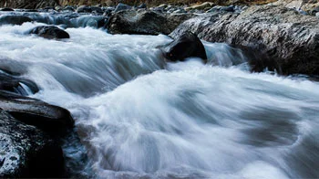

流人が遺した、芋の酒。
嘉永六年
薩摩の商人・丹宗庄右衛門が、罪を負って八丈島へ流された。
米の乏しい島で、彼は故郷から道具を取り寄せ、さつま芋から酒を造る法を島に伝えた。
大正四年、島でいちばん古い蔵がひらかれ、その造りはいまも続いている。
江戸酎は、島で採れた芋だけを集めて仕込む一本である。



八丈島 本格芋焼酎 江戸酎八丈
酒造
嘉永六年
薩摩の商人・丹宗庄右衛門が、罪を負って八丈島へ流された。
米の乏しい島で、彼は故郷から道具を取り寄せ、さつま芋から酒を造る法を島に伝えた。
大正四年、島でいちばん古い蔵がひらかれ、その造りはいまも続いている。
江戸酎は、島で採れた芋だけを集めて仕込む一本である。


白黄・紫・橙。島で採れる三系統のさつま芋をすべて使う。配合はその年の出来で変える。

麦麹（白麹）で仕込む。芋の甘みを、すっきりと支える。

火山の島をくぐった水。［水についての蔵元の説明をここに］
十一月
配合は毎年すこしずつちがう。「今年の江戸酎は？」と語り合うのも、この酒の楽しみ方。
二十五度
原材料 さつま芋（八丈島産）・麦麹（白麹）
製法 減圧・常圧ブレンド
内容量 一八〇〇ml／七二〇ml
八丈島酒造合名会社